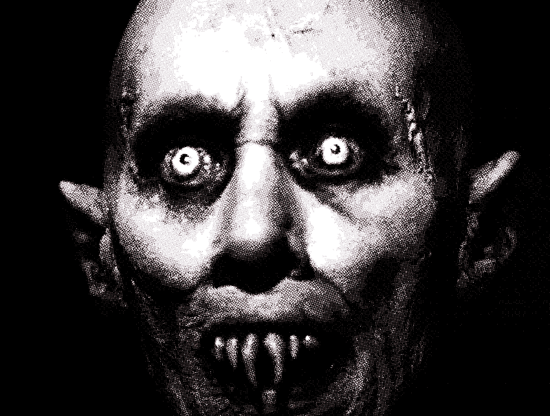
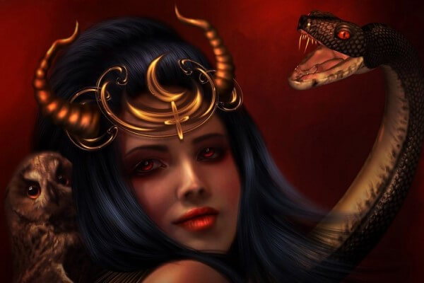
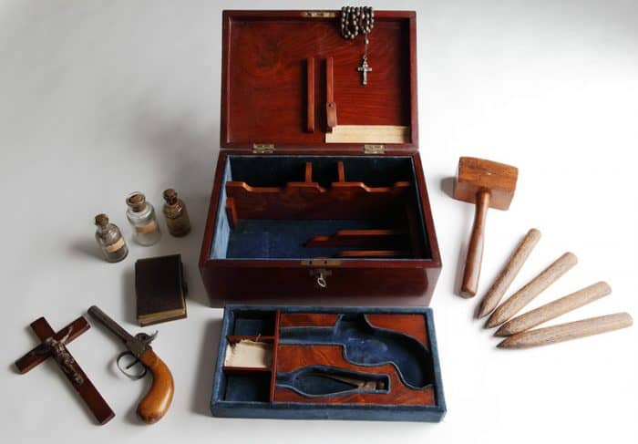

Un vampiro es, según el folclore de varios países, una criatura que se alimenta de la esencia vital de otros seres vivos (usualmente bajo la forma de sangre) para así mantenerse activo. En algunas culturas orientales y americanas aborígenes, esta superstición es una deidad demoníaca o un dios menor que forma parte del panteón siniestro en sus mitologías.
En la cultura europea y occidental, así como en la cultura global contemporánea, el prototipo de vampiro más popular es el de origen eslavo, es decir, el de un ser humano convertido después de morir en un cadáver activo o retornado depredador chupador de sangre.

Los monstruos chupasangre aparecieron por primera vez en el Folklore Eslavo, fue en Escandinavia donde salió a relucir la palabra “Vampiro” o “Upir” en ruso antiguo. Los primeros registros del uso de la palabra provienen del siglo XI.
Las leyendas sobre vampiros y el pánico de los pueblos siguieron vigentes a pesar de los intentos de la iglesia de erradicar las creencias paganas.
Las historias de vampiros se originaron por la malinterpretación de algunas enfermedades, como la rabia y la pelagra (una enfermedad que cambia el color de la piel produciendo manchas debido a la mala alimentación).
El desconocimiento sobre el proceso de descomposición del cuerpo también fue un factor determinante para la difusión de historias de vampiros. Los gases producidos por el cuerpo en descomposición hacen que los cuerpos se hinchen y en muchos casos aparecen hilos de sangre por la boca, lo que daba la apariencia que el recién fallecido acabara de “comer”.
Para la época describían a los vampiros como cuerpos hinchados con dientes afilados y uñas largas. Esta creencia de que los muertos podían transformarse en monstruos vampíricos inició una serie de rituales de entierro bastante peculiares.
Origen de los vampiros
Para conocer el origen de los vampiros lo primero que debes saber es que existen dos clases de vampiros diferentes:
- Los vampiros sanguinarios.
- Los vampiros psíquicos.
Los primeros se alimentan abiertamente de sangre humana. Son los vampiros modernos, de la literatura y el cine.
Los psíquicos son los que predominaban en la antigüedad. El vampiro te roba el alma, sientes que pierdes la vida, que toda tu esencia es absorbida desde algún lugar lejano y cercano a la vez. Como si te quedaras sin sangre, y los demás ven cómo te mueres sin poder hacer nada por evitarlo.
Estos vampiros prefieren a los niños pequeños, incapaces de resistirse a sus poderes, y aparecen muy pronto en la historia de la humanidad.
La primera teoría en la historia de lo que podría ser un vampiro señala a Lilith, Reina de la Noche, Madre de los Demonios y primera mujer de Adán, como la auténtica y primigenia vampiresa. Creada por Dios a la vez que Adán, resultó tener un alma demasiado oscura y retorcida. No engendró más que espíritus del mal, por lo que fue apodada “Monstruo de la Noche”. Eran famosos sus festines de sangre noche tras noche e, incluso, se dice que seducía a hombres mientras dormían para conseguir aumentar su diabólica descendencia, conocida como súcubos.

La segunda teoría señala a Caín como el vampiro original, de ahí que los vampiros también sean conocidos como “cainitas”. Cuando Caín mató a su hermano Abel fue desterrado a las tierras de Nod y allí fue condenado a vagar llevando consigo una maldición. Temería al sol de por vida y sentiría una sed insaciable de sangre. En su exilio coincidió con Lilith, que le enseñó a canalizar el poder de la sangre para aumentar su fuerza como vampiro.
Aunque la historia de los vampiros se remonta milenios atrás, su máximo apogeo se produjo entre los siglos XV y XVI en Europa, principalmente en Rumanía y Hungría. De hecho, Transilvania, región central de Rumanía, es conocida por ser la cuna de los vampiros y donde pasó gran parte de su vida el más famoso de todos ellos; el conde Vlad Drakul, más conocido como conde Drácula o, también, como “el Empalador”, apodo que ganó debido al gran placer que sentía comiendo ante los cuerpos empalados de sus enemigos. Vlad Drakul fue uno de los más crueles vampiros de la historia y extendió su mal por Alemania y, más tarde, al resto de Europa.
El vampiro más famoso de la historia -o así configurado como vampiro- es el célebre conde Vlad Tepes, un príncipe de la Valaquia rumana. Fue una especie de libertador y de prócer que batalló contra las poderosas huestes del Imperio Otomano. Vlad tenía la costumbre de empalar a sus enemigos. Nació en 1431 en Rumania y murió en 1476.
Al mismo tiempo, entre 1560 y 1614 vivió la aristócrata húngara Erzsébet Báthory, también conocida como la Condesa Sangrienta. La mujer asesinó a 650 muchachas jóvenes, a las que torturaba en los sótanos de su palacio. Según las distintas versiones, Báthory bebía la sangre de sus víctimas en búsqueda de la vida eterna.
Durante las pestes europeas los cadáveres eran un gran espectáculo para las sociedades de aquel entonces. Se observaba en los cuerpos arrumbados el espectáculo de la muerte en el que los colmillos daban la impresión de crecer como el pelo y las uñas.
El resultado de la exhibición terrorífica y monstruosa convoca a una profunda curiosidad y dispara la generación de innumerables leyendas, ya que se interpreta al muerto como un cadáver activo y configura un panteón siniestro que es el espacio en el que imperan los vampiros.
Características y atributos
La descripción de estas criaturas varía según el folclore de cada región. Además la mayoría de atributos de un vampiro según la cultura contemporánea provienen de la literatura, sobre todo de la novela Drácula y las películas basadas en ella, así como de los cómics y videojuegos, a veces contradiciendo la naturaleza primordial del vampiro tradicional original. Por eso, de las siguientes características, solo algunas son las esenciales o comunes en el folclore general o como parte de las creencias de ciertas regiones; otras son inventadas por los novelistas y libretistas de cine o diseñadores de videojuegos.
Fueron humanos, pero ahora están en un estado intermedio entre la vida y la muerte, de ahí que se les llame no-muertos, revinientes o redivivos. Esta naturaleza determina su aspecto físico básico:
- Entre los eslavos, griegos y pueblos de Europadel este, un cadáver desenterrado era considerado vampiro si su cuerpo parecía hinchado y le salía sangre (presuntamente de sus víctimas) de la boca o la nariz. También si notaban que sus uñas, pelo y dientes eran más largos que cuando había sido enterrado e incluso poseía un aspecto más saludable de lo esperado, mostrando piel sonrosada y pocos o ningún signo de descomposición.
- En Transilvania (Rumanía) se consideraba que los vampiros eran flacos, pálidos, y poseían unas largas uñas y largos y puntiagudos caninos (colmillos).
- En Bulgaria y Polonia se les atribuye tener un solo orificio nasal así como una especie de aguijón en la punta de la lengua.
- Según la creencia en el folclore rumano, tienen la posibilidad de transformarse en animales como gatos o perros, ovejas y caballos. La forma más mencionada en la ficción popular es la del murciélago y en niebla.
Conversión
En el conjunto de creencias populares se pueden distinguir unas formas básicas, a veces complementarias entre sí, para que un ser humano se convierta en vampiro:
- Por predisposición desde el nacimiento: En Rumanía tenía más posibilidades de ser un strigoi, el séptimo o duodécimo hijo cuyos hermanos mayores eran todos del mismo sexo. O tener unas marcas de nacimiento como el hueso sacro pronunciado, abundante vello corporal y haber nacido encapuchado, es decir con la cabeza envuelta en parte de la membrana placentaria, o haber ingerido parte de la misma. Entre los eslavos también tenían mayor probabilidad de convertirse en vampiros los nacidos en Sábado Santo.
- Por muerte prematura o violenta: En la antigua Grecia, en donde se denominaban vrykolakas o brucolacos a los así originados, al igual que entre búlgaros, eslavos, y en ciertas culturas africanas y en Indonesia, se creía que los niños, adolescentes y en general las personas que habían tenido una muerte prematura o en circunstancias anormales, por suicidio o violencia, podían convertirse en fantasmas vagabundos o vampiros.
- Por incumplimiento de rituales funerarios y religiosos: En Grecia, Bulgaria y Rumanía también se creía que alguien se convertía en vampiro después de morir si quienes debían ocuparse de preparar y vigilar debidamente el cadáver no realizaban los rituales adecuados o no cumplían bien su tarea, como impedir que un animal, especialmente un perro o gato, e incluso una persona pasaran sobre el mismo. Esta creencia es similar en los hindúes que consideraban que los espíritus o Pitrs, en espera de reencarnar, pueden convertirse en vampiros si nadie les recuerda y realiza los shraadh, rituales funerarios de rigor para facilitar su reencarnación.
- Como maldición por acciones criminales o sacrílegas: En la antigua China también se creía que se convertían en vampiros ciertos criminales, tradición similar a la existente entre los eslavos y los griegos, quienes creían que los vampiros eran brujas o personas que se habían rebelado contra la Iglesia mientras estaban vivos, vendiendo su alma al diablo y que al morir sus cuerpos podían ser poseídos por demonios. En la Europa cristiana y especialmente entre los griegos, esta creencia era reforzada con los conceptos desarrollados por el cristianismo basados en la idea neoplatónica de la vida después de la muerte y la idea de la supervivencia del alma hasta el día del Juicio Final a pesar de la corrupción del cuerpo, de aquellos que murieran arrepentidos de sus pecados y que hubieran recibidos los últimos sacramentos. Por eso, los griegos y los eslavos creían que todos aquellos que no fueran enterrados en tierra consagrada (en particular los suicidas y los excomulgados) o los que no hubieran recibido la extremaunción, tenían la mayor posibilidad de convertirse en vampiros o tympaniaios.
- Por mordedura de un vampiro: Según casi todas las tradiciones, especialmente entre los eslavos,1 aquella persona que moría después de ser mordida por un vampiro se convertiría a su vez en uno. Los escritores ocultistas aducen que esta manera solo es posible si hay aceptación por parte de la víctima. Los autores de literatura de ficción le han dado a esta manera de convertirse en vampiro una connotación sexual intensa, muy atractiva para propósitos dramáticos.
Cómo acabar con un vampiro y otros mitos
Se piensa, erróneamente, que para matar a un vampiro basta con clavar una estaca de madera en su corazón. Este acto es necesario pero no suficiente, ya que clavando la estaca podemos dejarlo bloqueado temporalmente pero, para que realmente muera, es necesario quemarlo después en una hoguera o exponer su cuerpo al sol durante varios días. Las balas, cuchillos y demás armas sólo causan heridas que sanan con asombrosa facilidad en el cuerpo de un vampiro. Hay otras teorías sobre cómo dar muerte a un vampiro como, por ejemplo, abrir su ataúd durante el día, clavar una estaca en el corazón y enterrarlo en una tumba cavada en un cruce de caminos, pero esta estrategia no siempre tiene el éxito deseado.

Hay otros símbolos y objetos que también son usados para herir o ahuyentar a los vampiros como, los crucifijos, el agua bendita y el ajo. Nada de esto daña realmente a un vampiro, como mucho lo distrae temporalmente. El sol los debilita y los quema, pero no tan rápido como se pudiera pensar, aunque quedan muy desorientados y se vuelven mucho más lentos, perdiendo su celeridad habitual (esa gran velocidad que hace parezcan un torbellino cuando se mueven). Sólo los vampiros poderosos aguantan varios días al sol.
También existen algunos mitos que son, simplemente, falsos, como que los vampiros no pueden cruzar aguas en movimiento. Si esto fuera cierto, no se habrían extendido por todo el mundo, aunque hay leyendas que explican que sí pueden hacerlo portando tierra de su tumba en el ataúd.
Vampiros que existieron en la vida real
Jure Grando, el vampiro de Kringa
En Kringa, un pueblo de la antigua región de Istria, hoy conocida como Croacia, vivió y murió un campesino llamado Jure Grando. Y volvió. Según se recoge en los archivos, Jure, defenestrado en 1656 debido a una enfermedad, volvió esa misma noche como un štrigon, una estrige, y estuvo aterrorizando al pueblo durante dieciséis años.
Cuentan los documentos que atormentaba y violaba a su viuda, asaltaba a la gente y aterrorizaba a los niños apareciendo por la noche y a través de las ventanas. Varios lugareños se reunieron por fin, tras un tiempo, y trataron de dar caza al vampiro de Jure, lo que consiguieron no con una estaca, como dictamina el folclore, sino cortándole la cabeza y realizando un exorcismo. El caso de Jure Grando es importante dentro del mundo de los vampiros por ser, probablemente, el primero documentado oficialmente de la historia.
Que existió, lo sabemos. Que algo ocurrió en Kringa, también. Pero, ¿qué pasó realmente? No siempre podemos apartar la oscuridad de los hechos pasados tiempo atrás.
El sacerdote perro.
Los escoceses son amantes de los fantasmas y otras criaturas fantásticas. Y no es de extrañar que posean varios vampiros en su folclore llenos de castillos y abadías ominosas regadas por la lluvia. De hecho, fue el castillo Slains, en Cruden Bay, el que inspiró a Bram Stoker para escribir "Drácula".
Pero ahora vayamos a Melrose. Entre las paredes de su derruida abadía, allá por 1138, cuentan los textos de Guillermo de Newburgh que vivió un capellán nada ortodoxo. Este sacerdote gustaba de cazar a caballo con su jauría de perros. Por sus excesos y su ineptitud como cura, fue llamado Hunderprest, o el "cura perro" (o cazador). Dicen que cuando murió no tenía otra cosa que hacer que volver como vampiro a atormentar a los ciudadanos de Melrose. También cuentan que los abades le dieron caza y lo expulsaron de este mundo mediante un hachazo en la cabeza y una pira funeraria.
Petar Blagojevich, el nueve veces asesino.
Volvamos a Europa del Este. El caso de Petar Blagojevich es uno de los mejores documentados del siglo XVIII sobre histeria vampírica. El bueno de Petar vivió cerca de Kisilova, en Serbia, en tiempos complejos de guerra y conflicto. Y, como de costumbre en estos casos, murió para volver un día después a asesinar gente.
Según contaron sus conciudadanos, Petar Blagojevich asesinó a nueve personas a lo largo de la semana siguiente a su muerte. Todos los finados eran encontrados en sus camas con restos de sangre y la garganta abierta (o aplastada). La cuestión es que la histeria se apoderó del pueblo, que amenazó a la autoridad local para que tomara cartas en el asunto pasando por encima de la autoridad municipal. El cuerpo de Petar Blagojevich fue exhumado, saltándose la ley, y fue encontrado incorrupto y con señales de vampirismo, según relatan los documentos. El cuerpo fue empalado y quemado, y las autoridades superiores, debido a la gravedad del asunto, no tomaron represalias.